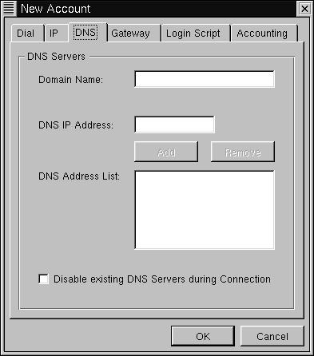
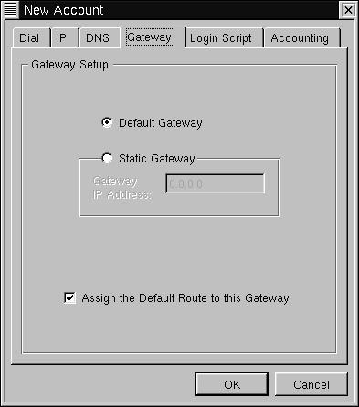
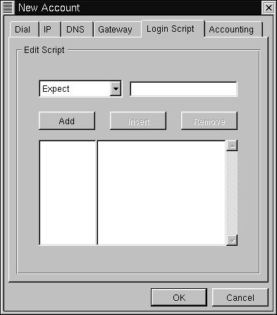
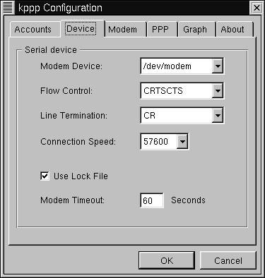
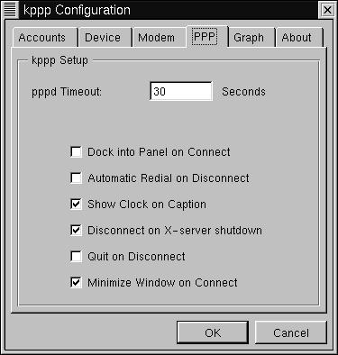

7.1. KPPP - The KDE PPP Dialer
http://devel-home.kde.org/~kppp/index.html
KPPP is an easy tool for configuring your PPP links. It comes with the default installation of KDE, and is quite well integrated into that environment.
KPPP also has a good help system built in. If you just right click on the majority of the buttons in the application, a menu will pop up with an item called "Quickhelp". Clicking it will give a quick summary of whatever item you clicked on.
The opening screen of kppp will list any available connections, and allow you to specify a Login ID and password for the connection. There is also a "Show Log Window" option. Selecting this will show a log window. This can be handy if you are trying to debug a connection.

For now, click on the "Setup" button. This will bring up the setup window. It has a series of tabs across the top. Select the one called "Accounts". There will be a list of Accounts, if any.

Select "New" from the right hand side. Another menu will pop up.

First, specify a name for this connection in the "Connection Name" box. A good name would be the name of your ISP. Then enter the phone number. Select the type of authentication. If your ISP hasn't specified otherwise, leave it as "PAP". You can optionally store your password between sessions, but this may be a security risk.
Click on the tab marked "IP". Here you have the option to configure your IP address, either a Dynamic or Static address. You should know what kind you want, specified by your ISP. You can also optionally specify that you wish to configure the hostname for this IP, which means that kppp will name your machine according to the name given to it by your ISP.

Click on the tab marked "DNS". Here you can set up DNS. Fill in the appropriate fields with the information supplied from your ISP.

Click on the "Gateway" tab. Here you can configure your gateway, or router address. If a gateway or router address was specified by your ISP, select "Static Gateway" and enter it in the box below. Otherwise leave this alone. The box marked "Assign the Default Route" should be checked.

The "Login Script" tag is only useful if you specified "Login Script" authentication under the "Dial" tab. If you need to use a Login Script, you can enter it here, as a series of commands. Select the type of command you wish to use, followed by the argument, then click "Add". Click "Remove" to remove a selected command.

The "Accounting" tab allows you to track the number of bytes that you have sent and recieved for a given connection. This can be useful if your ISP tracks the amount of data that you use, and perhaps charges you based on that. If you wish to use accounting, click on the "Enable accounting" box. You can then select a country, if you live in a country that has taxes, tariffs, or other charges based on data transfer. Otherwise, just select either "Bytes in", "Bytes in and out", or "Bytes out". For more information, consult the KPPP manual.

Click OK to finish the creation of this new account.
Now we'll cover the other tabs in the kppp configuration window.
The next one is "Device". It contains configuration information about your modem. You can select the device, flow control, line termination, and connection speed. It is recommended that you leave these alone unless otherwise specified by your ISP. You can also specify values for using a lock file for your modem device(recommended) and a modem timeout. Modem timeout refers to the amount of time that kppp will wait for your modem to respond.

The "Modem" tab is mainly useful for debugging your modem. You can also adjust your modem volume. For more information on these commands, consult the kppp documentation.

Next is the "PPP" tag. It contains many useful items for making kppp tailor fit to your needs. The "pppd Timeout" field specifies how long kppp should wait for pppd to bring up a connection. The "Dock" option states that kppp should recede into the KDE dock when it is connected. The "Automatic redial" specifies that kppp should redial if it is disconnected. The "show clock" option will display how time you have been connected. The "Disconnect on X-server shutdown" means that if you leave KDE, PPP should shut down. The "Quit on Disconnect" option will close kppp if you disconnect from your ISP. Finally, the "Minimize window on connect" option will minimize kppp when it connects.

The "Graph" tab is useful for kppp's throughput graphing. For more information on this feature, see kppp's documentation.
Click Ok to leave this menu. Now ensure your connection is selected in the "Connect to:" box, and click "connect". You're all set!